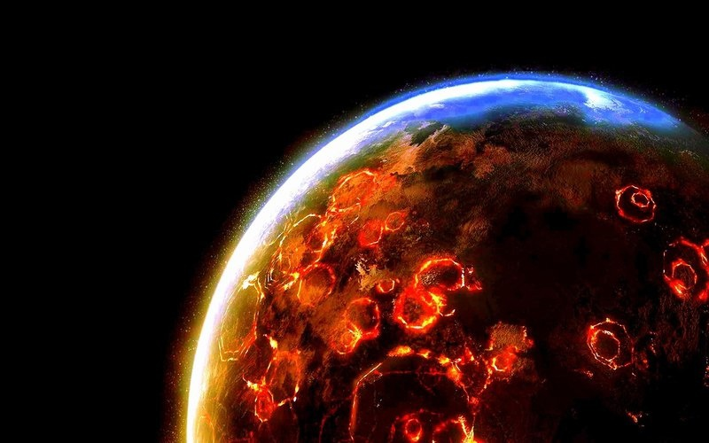
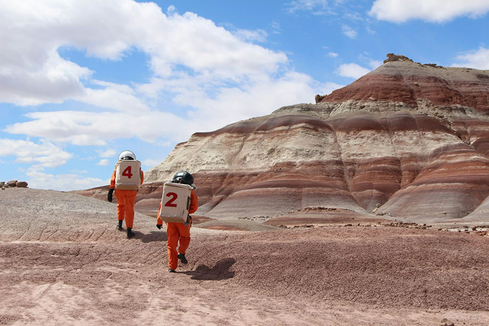
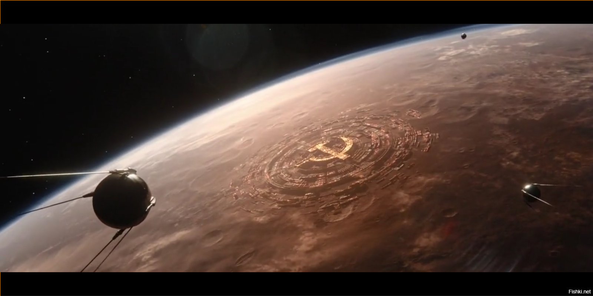
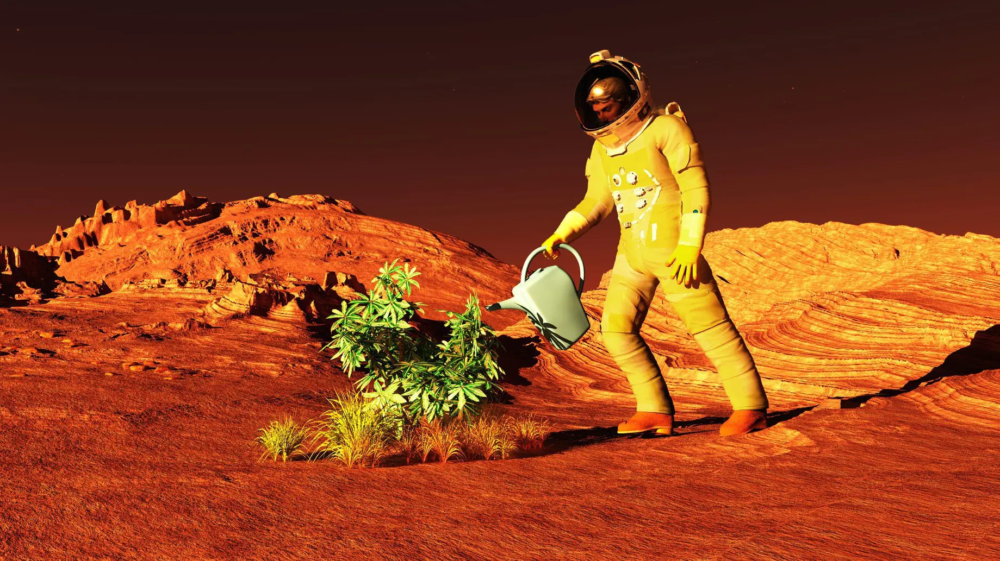

| Дата |
Заголовок |
| 30.04.274 |
Ядерные бомбардировки Северной ледяной шапки перенесены на месяц из-за миграции пингвинов.

|
30.04.274 |
Открытие автосалона Tesla в Маск-сити запланировано на восьмую декаду 274 года. На торжественном открытии будет присутствовать сам первый клон Илона Маска! |
| 30.04.274 |
Космодром Нью-Бредбери принял первые шатлы с марсианскими репатриантами.

|
| 30.04.274 |
В Соединённых штатах Болгарии найдено последнее и главное пророчество Ванги! Ядерная война между Марсом и загнивающей Землёй начнётся.... |
| 30.04.274 |
Британские учёные выяснили, что красный цвет Марса связан с коммунизмом. Прах М.С. Горбачева был экстренно вывезен на Землю для предотвращения катастрофы

|
| 30.04.274 |
В Маск-сити торжественно открыт юбилейный 3000-й памятник Илону Маску. |
| 30.04.274 |
Жители Нью-Бредбери возмущены, что их рекорд побит по памятникам гражданами Маск-сити. |
| 30.04.274 |
На станции "Ухань" началачь вспышка неизвестного вируса. Предположительно, виной всему стал деликатес из летучей мыши. |
| 30.04.274 |
Банк "Казна пуста, Милорд!" предлагает все марсианам льготный селхоз кредит всего под 100% годовых!.

|
© Департамент демографии и туризма Марса, 2124
Выдача карт колонизатора и тур. виз происходит по адресу:
Нью-Бредберри, Одуванчиковый кратер,
ул. Космодесанта, купол 9. Вход со стороны парковки марсоходов напротив гидропонных ферм.